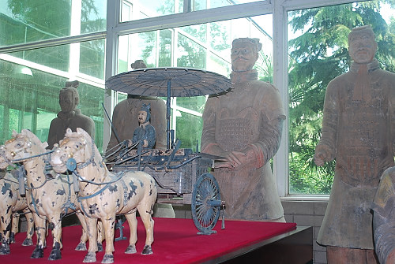

|

We began the 1st full day in Xi'an heading to what we definitely wanted to see - the terra cotta warriors. First we stopped at this factory which used 246 BCE-206 BCE methods to reproduce various sized replicas of the terra cotta warriors. The factory made replicas of the warriors using the same techniques as was used on the original ones. |